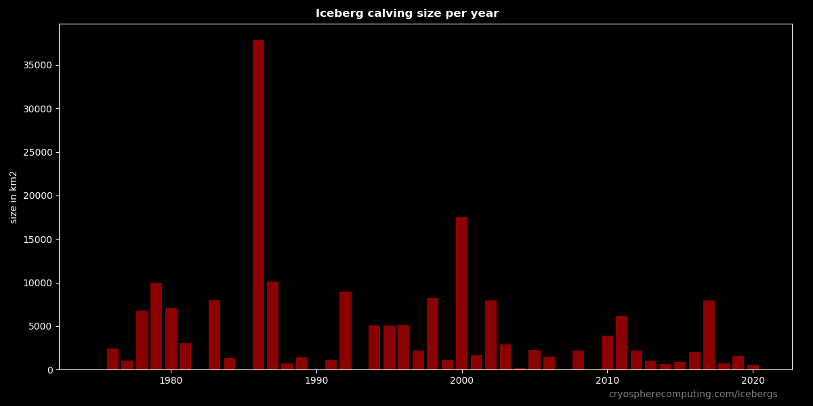

Iceberg Stats

Iceberg Size
All iceberg until 2021 together have an area of 176,667 km2.
The top ten have accurate sizes. The rest are estimates. (length * width * 0.9)
Not every iceberg calves as an exact rectangle. Very large icebergs from big iceshelfs come close, but rounded corners
or sections missing means the real size is smaller. Therfore the size has been reduced by 10%. Usually the real size is
between 80-100% of the perfect calculated rectangle.
Iceberg Age
Iceberg Age from calving to falling below size requirement to be tracked for the last piece. As of 2022 the oldest Iceberg is B09 with 30.91 years, closely followed by A23 with 30.18 years. While most of B09 has melted out some pieces got stuck on their journey and will survive at least a few more years. A23 never got far and spend all of it's life being grounded in the Weddell Sea. If it stays grounded as one giant piece it can survive several more decades.
Iceberg travel distance
Most Icebergs follow the Antarctic coastal current and either melt out on this path or when they drift into the southern Atlantic. Some icebergs escape from the Ross Sea into the southern Pacific.
This is the longest direct path an iceberg could take. In reality swirls make the journey much longer.
The current record is 21945 km by iceberg "b15k"
Iceberg speed
